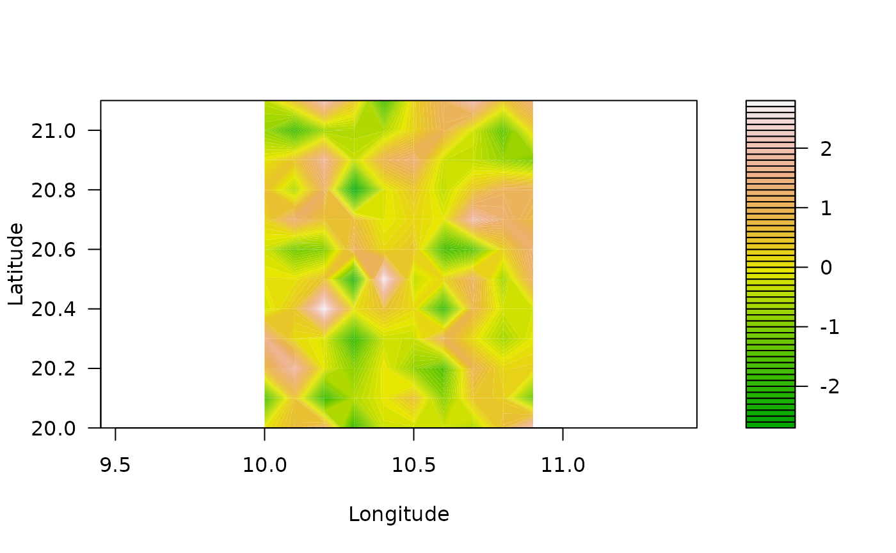
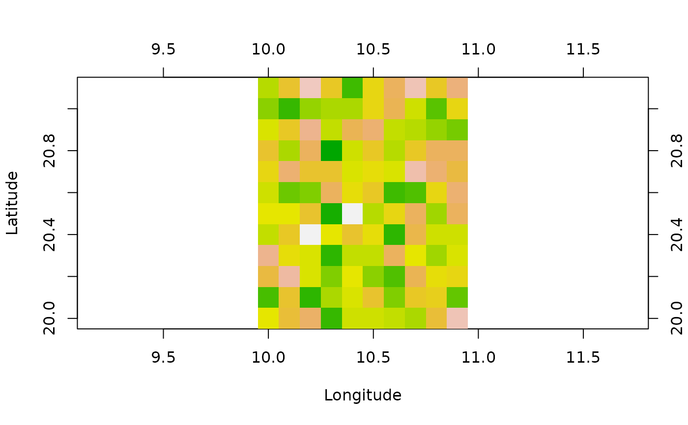
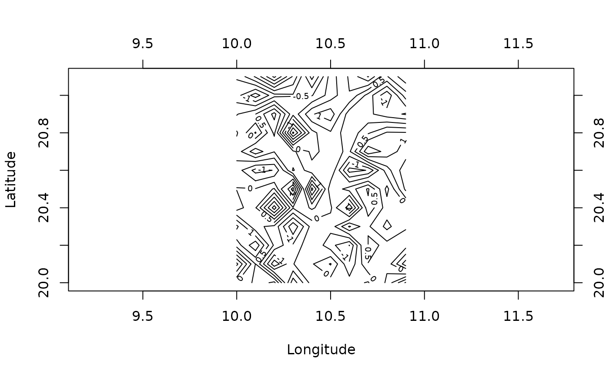
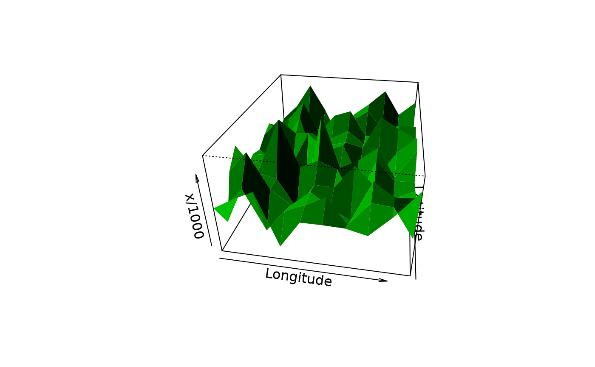
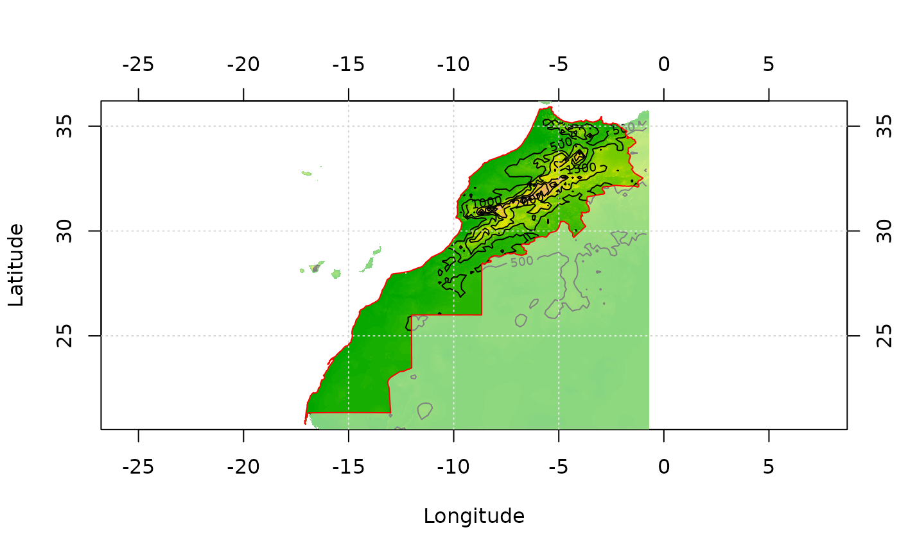

A geomat, geotm or geomask object for AURELHY
geomat.RdGeomat are matrices of geographically referenced data. These are essentially georeferenced rectangular, regular grids of points. Data can be numeric (reals), integer, or logical (booleans). Objects 'geotm' are special 'geomat' matrices containing always integers and representing terrain models. Objects 'geomask' are also special 'geomat' that only contain logical values. They are mainly used to define a mask on top of a grid (which points to consider and which ones to eliminate from a calculation).
geomat(x, size, xcenter, ycenter, coords = c(size = size, x = xcenter,
y = ycenter), datatype = c("numeric", "integer", "logical"), nodata = NA)
geotm(x, size, xcenter, ycenter, coords = c(size = size, x = xcenter,
y = ycenter))
geomask(x, size, xcenter, ycenter, coords = c(size = size, x = xcenter,
y = ycenter))
read.geomat(file, type = "ascii", datatype = c("numeric", "integer", "logical"),
...)
read.geotm(file, type = "ascii", ...)
read.geomask(file, type = "ascii", threshold = 0, ...)
write.geomat(x, file, type = "ascii", integers = FALSE, nodata = -9999, ...)
write.geotm(x, file, type = "ascii", nodata = -9999, ...)
write.geomask(x, file, type = "ascii", nodata = -9999, ...)
as.geomat(x, ...)
# S3 method for class 'geomat'
print(x, ...)
# S3 method for class 'geomat'
coords(x, type = "par", ...)
# S3 method for class 'geomat'
resample(x, x0 = 1, y0 = 1, step = NULL, nx = 100, ny = nx,
strict = FALSE, ...)
# S3 method for class 'geomat'
window(x, xlim, ylim, ...)
# S3 method for class 'geomat'
plot(x, y = NULL, max.xgrid = 100, nlevels = 50,
color.palette = terrain.colors, xlab = "Longitude", ylab = "Latitude",
asp = 1, ...)
# S3 method for class 'geomat'
image(x, max.xgrid = 500, col = terrain.colors(50),
add = FALSE, xlab = if (add) "" else "Longitude",
ylab = if (add) "" else "Latitude", asp = 1, ...)
# S3 method for class 'geomat'
contour(x, max.xgrid = 100, nlevels = 10, col = par("fg"),
add = FALSE, xlab = if (add) "" else "Longitude",
ylab = if (add) "" else "Latitude", asp = 1, ...)
# S3 method for class 'geomat'
persp(x, max.xgrid = 500, col = "green3",
xlab = "Longitude", ylab = "Latitude", asp = 1, theta = 10, phi = 30,
expand = 1, shade = 0.75, border = NA, box = TRUE, ...)Arguments
- x
An object (a matrix or data frame for
geomat(),geotm(), orgeomask(), a 'predict.aurelhy' object foras.geomat(), or a 'geomat' object for the other functions)- size
The size of a grid square (in decimal degrees)
- xcenter
The position of the center of the top-left square of the grid, that is, its longitude in decimal degrees
- ycenter
Idem, but latitude in decimal degrees
- coords
A named vector of three numbers: 'size', 'x' and 'y' as above
- datatype
The type of data to store in the grid, ort to read/write on the file. Can be 'numeric' (reals), 'integer', or 'logical' (booleans)
- nodata
The number to use to represent missing data in the grid (by default it is
NA). For file operations, it is the numerical code used to represent missing or not applicable cell in the file. By default, it is -9999 in ASCII grid format- file
The path to the file used for reading or writing data
- type
The type of data to read/write. Currently, only \"ascii\", which means ARC/INFO ASCII GRID format (.asc file). For
coords(), it is the type of coordinates to be calculated:"par"is the vector defining the coordinates as 'size' of the cell, 'x' and 'y' coordinates of the center of the top-left square in the grid and the 'x1', 'y1' coordinates of the top-left point and 'x2', 'y2' coordinates of the bottom-right points covered by the grid. If"x", or"y",coords()returns a vector of the coordinates of centers of the grid points. Finally if"xy", then,coords()returns a data frame with 'x' and 'y' coordinates of all points in the grid (center of rectangles)- threshold
Value (single integer) above which all data are converted to
TRUE. The rest is converted toFALSE, except missing data that are encoded asNAduring the conversion into logical values- integers
Do we read/write integers (saves memory and disk space used to represent the grid)
- x0
The X origin of the new grid
- y0
The Y origin of the new grid
- step
The step to use for resampling (
step = 2means we take one point every two original points in the grid).- nx
The desired number of points in the X direction (longitude).
resample()is a quick method that takes a point every n points in the grid without doing more calculation. The final number of points is an integer value of points that can be resampled without interpolation- ny
idem than nx, but in the Y direction (latitude)
- strict
do we interpolated the grid so that we obtain exactly
nxandnypoint (whenstrict = TRUE)? By default, not (strict = FALSE) and we span as far as possible to the right and to the bottom for the interpolated grid- xlim
A vector of two numbers defining the limits to use in X direction (longitude) for the window
- ylim
A vector of two numbers defining the limits to use in Y direction (latitude) for the window
- y
Unused argument to match
plot()method definition- max.xgrid
The maximum number of points in x direction to use. If the grid that is plotted is denser, it is first resampled to avoid drawing a graph with too much points
- nlevels
the number of contour levels to calculate
- color.palette
a color palette generation function
- col
A vector of colors to use for the plot
- xlab
The label of the X axis (
"Longitude"by default)- ylab
The label of the Y axis (
"Latitude"by default)- asp
The aspect ratio between 'x' and 'y'. The default value of
asp = 1should usually not be changed.- add
Do we add the graph to an existing graph device, or do we plot a fresh new graph?
- theta
angles defining the viewing direction.
thetagives the azimuthal direction- phi
phiis the colatitude angle of the viewing direction- expand
the expansion level to use for the z-axis in the perspective
- shade
the shade at a surface facet is computed as
((1+d)/2)^shade, wheredis the dot product of a unit vector normal to the facet and a unit vector in the direction of a light source. Values of shade close to one yield shading similar to a point light source model and values close to zero produce no shading. Values in the range 0.5 to 0.75 provide an approximation to daylight illumination.- border
the color of the borders of facets. If
NA, no border is drawn. This is usually a good value when shading is used- box
If
TRUE, a box, and axes are drawn around the perspective plot- ...
Further arguments passed to the functions (only used for the plotting method)
Value
An object of class, respectively 'geomat', 'geotm' or 'geomask' inheriting from 'matrix' is created. Methods either return an object of same class, or are used for their side effect of plotting a graph. Objects 'geotm' and 'geomask' also inherit from 'geomat'.
A 'geomat' object. For the print() method, size of the grid is presented
in km.
Examples
# Create a simple geomat object containing random numbers
(gm <- geomat(matrix(rnorm(120), nrow = 10), 0.1, 10, 20))
#> A geomat object with a grid of 10 x 12
#> The cell size is 0.1°, that is approx. 11090 m in lat.
#> The grid spans from 9.95° to 10.95° long.
#> and from 19.95° to 21.15° lat.
#> Data are of type double
# Get coordinates for this grid
coords(gm)
#> size x y x1 y1 x2 y2
#> 0.10 10.00 20.00 9.95 19.95 10.95 21.15
# Longitudes (x) and latitudes (y) for the center of all squares
coords(gm, type = "x")
#> [1] 10.0 10.1 10.2 10.3 10.4 10.5 10.6 10.7 10.8 10.9
coords(gm, type = "y")
#> [1] 20.0 20.1 20.2 20.3 20.4 20.5 20.6 20.7 20.8 20.9 21.0 21.1
# Coordinates of the center of all squares
coords(gm, type = "xy")
#> x y
#> 1 10.0 20.0
#> 2 10.1 20.0
#> 3 10.2 20.0
#> 4 10.3 20.0
#> 5 10.4 20.0
#> 6 10.5 20.0
#> 7 10.6 20.0
#> 8 10.7 20.0
#> 9 10.8 20.0
#> 10 10.9 20.0
#> 11 10.0 20.1
#> 12 10.1 20.1
#> 13 10.2 20.1
#> 14 10.3 20.1
#> 15 10.4 20.1
#> 16 10.5 20.1
#> 17 10.6 20.1
#> 18 10.7 20.1
#> 19 10.8 20.1
#> 20 10.9 20.1
#> 21 10.0 20.2
#> 22 10.1 20.2
#> 23 10.2 20.2
#> 24 10.3 20.2
#> 25 10.4 20.2
#> 26 10.5 20.2
#> 27 10.6 20.2
#> 28 10.7 20.2
#> 29 10.8 20.2
#> 30 10.9 20.2
#> 31 10.0 20.3
#> 32 10.1 20.3
#> 33 10.2 20.3
#> 34 10.3 20.3
#> 35 10.4 20.3
#> 36 10.5 20.3
#> 37 10.6 20.3
#> 38 10.7 20.3
#> 39 10.8 20.3
#> 40 10.9 20.3
#> 41 10.0 20.4
#> 42 10.1 20.4
#> 43 10.2 20.4
#> 44 10.3 20.4
#> 45 10.4 20.4
#> 46 10.5 20.4
#> 47 10.6 20.4
#> 48 10.7 20.4
#> 49 10.8 20.4
#> 50 10.9 20.4
#> 51 10.0 20.5
#> 52 10.1 20.5
#> 53 10.2 20.5
#> 54 10.3 20.5
#> 55 10.4 20.5
#> 56 10.5 20.5
#> 57 10.6 20.5
#> 58 10.7 20.5
#> 59 10.8 20.5
#> 60 10.9 20.5
#> 61 10.0 20.6
#> 62 10.1 20.6
#> 63 10.2 20.6
#> 64 10.3 20.6
#> 65 10.4 20.6
#> 66 10.5 20.6
#> 67 10.6 20.6
#> 68 10.7 20.6
#> 69 10.8 20.6
#> 70 10.9 20.6
#> 71 10.0 20.7
#> 72 10.1 20.7
#> 73 10.2 20.7
#> 74 10.3 20.7
#> 75 10.4 20.7
#> 76 10.5 20.7
#> 77 10.6 20.7
#> 78 10.7 20.7
#> 79 10.8 20.7
#> 80 10.9 20.7
#> 81 10.0 20.8
#> 82 10.1 20.8
#> 83 10.2 20.8
#> 84 10.3 20.8
#> 85 10.4 20.8
#> 86 10.5 20.8
#> 87 10.6 20.8
#> 88 10.7 20.8
#> 89 10.8 20.8
#> 90 10.9 20.8
#> 91 10.0 20.9
#> 92 10.1 20.9
#> 93 10.2 20.9
#> 94 10.3 20.9
#> 95 10.4 20.9
#> 96 10.5 20.9
#> 97 10.6 20.9
#> 98 10.7 20.9
#> 99 10.8 20.9
#> 100 10.9 20.9
#> 101 10.0 21.0
#> 102 10.1 21.0
#> 103 10.2 21.0
#> 104 10.3 21.0
#> 105 10.4 21.0
#> 106 10.5 21.0
#> 107 10.6 21.0
#> 108 10.7 21.0
#> 109 10.8 21.0
#> 110 10.9 21.0
#> 111 10.0 21.1
#> 112 10.1 21.1
#> 113 10.2 21.1
#> 114 10.3 21.1
#> 115 10.4 21.1
#> 116 10.5 21.1
#> 117 10.6 21.1
#> 118 10.7 21.1
#> 119 10.8 21.1
#> 120 10.9 21.1
# Resample the grid to take one point every second points in the original grid
resample(gm, step = 2)
#> A geomat object with a grid of 5 x 6
#> The cell size is 0.2°, that is approx. 22180 m in lat.
#> The grid spans from 9.9° to 10.9° long.
#> and from 19.9° to 21.1° lat.
#> Data are of type double
# Extract a window from the grid (keep only squares with centers in the window)
window(gm, xlim = c(9.5, 10.2), ylim = c(19.5, 20.6))
#> A geomat object with a grid of 3 x 7
#> The cell size is 0.1°, that is approx. 11090 m in lat.
#> The grid spans from 9.95° to 10.25° long.
#> and from 19.95° to 20.65° lat.
#> Data are of type double
# Plot this grid in different ways
plot(gm)

image(gm)

contour(gm)

persp(gm, expand = 100)

# Now load real data (Morocco terrain model)
data(morocco)
morocco
#> A geotm object with a grid of 1998 x 1878
#> The cell size is 0.008333334°, that is approx. 924 m in lat.
#> The grid spans from -17.34825° to -0.6982474° long.
#> and from 20.54881° to 36.19881° lat.
#> Data are of type integer
image(morocco)
contour(morocco, add = TRUE)
grid()
# The mask of points inside Morocco territory was obtained like that:
#library(splancs)
#data(mbord)
#inm <- inout(coords(morocco, "xy"), mbord[[1]])
#mmask <- morocco
#mmask[inm] <- 1
#mmask[!inm] <- 0
#mmask[is.na(morocco)] <- NA
#mmask <- geomask(mmask, coords = coords(mmask))
data(mmask)
image(mmask)
# Get Morocco frontiers from a shapefile
# To read it from an ESRI shape
#mbord <- read.geoshapes("morocco_border.shp")
data(mbord)
lines(mbord, col = "red")
